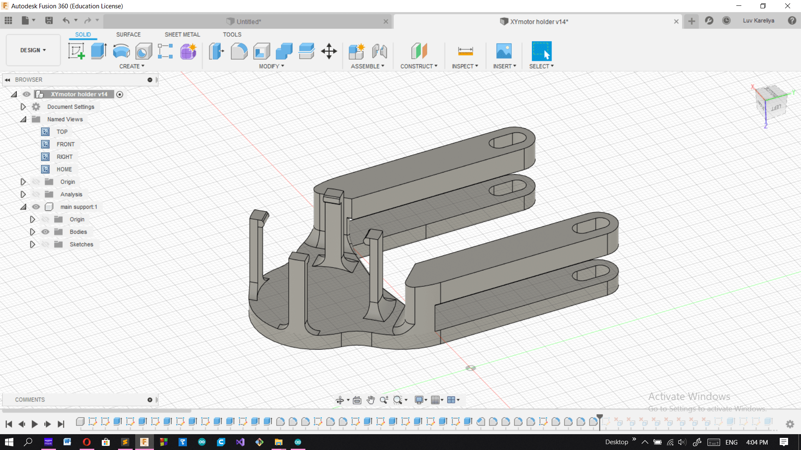
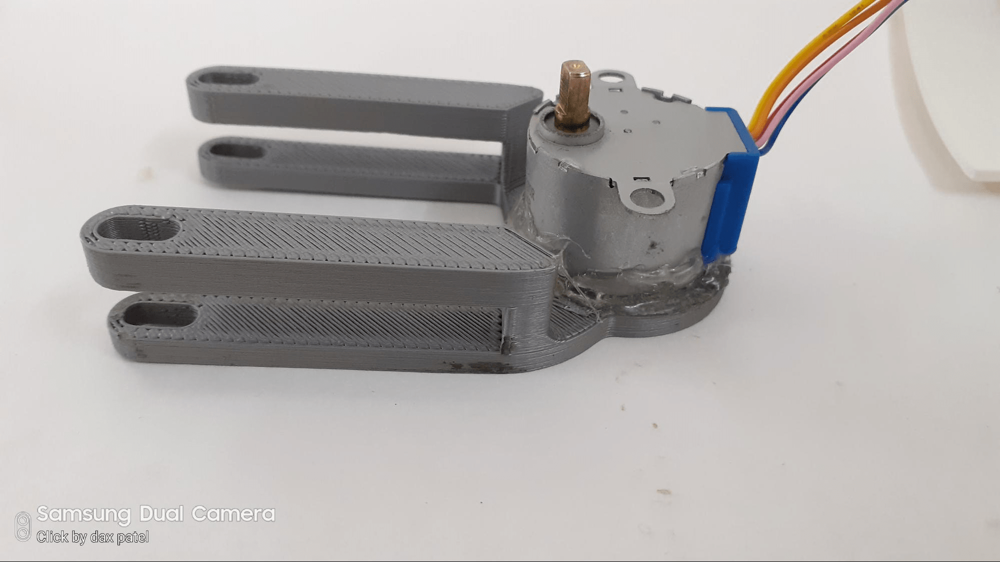
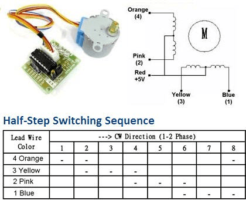
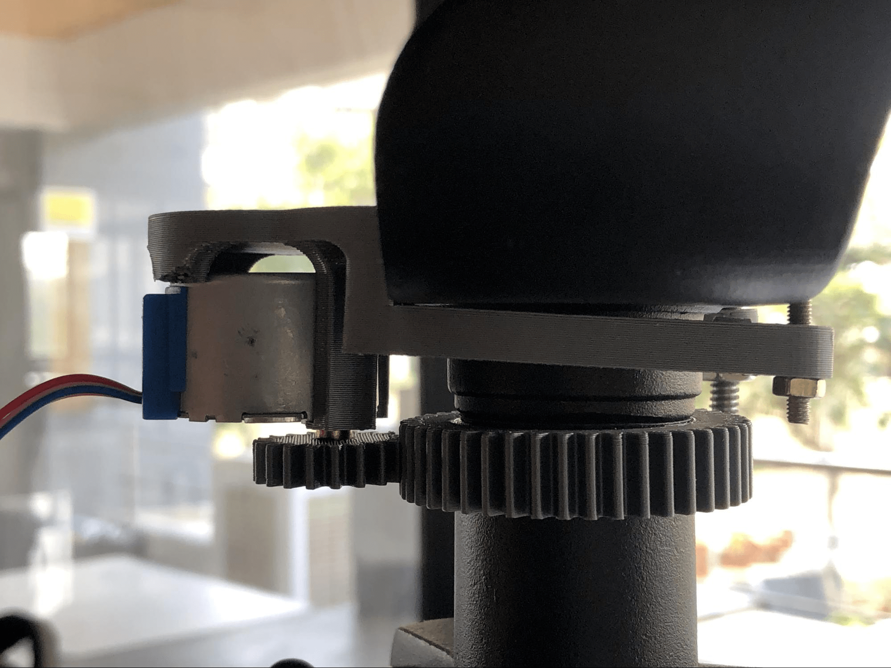

As mentioned before, I made a design of a motor holder and 3D printed it.
This was my initial idea, to create clamps which would hold the stepper motor. But my design was flawed, and that’s because of two reasons: 1) the circumference of the base was not exactly similar to the motor's circumference. 2) the clamps were too thin, two of them broke apart as I tried to place the motor inside it.
I was left with no option but to use a glue gun and fix the motor on the base.
This was my first failure in this project. After attaching the holder to the mount, I started working on Arduino and learned the mechanism of unipolar stepper motors.
After a couple of hours of learning Arduino sketches of stepper motors and finally getting to code and upload it, I found out another fault in the system. My motors would work fine and the mount was rotating as expected, but when I attached the optical tube to it, it stopped working. My 28BYJ-48 DC unipolar stepper motor was lacking torque.
